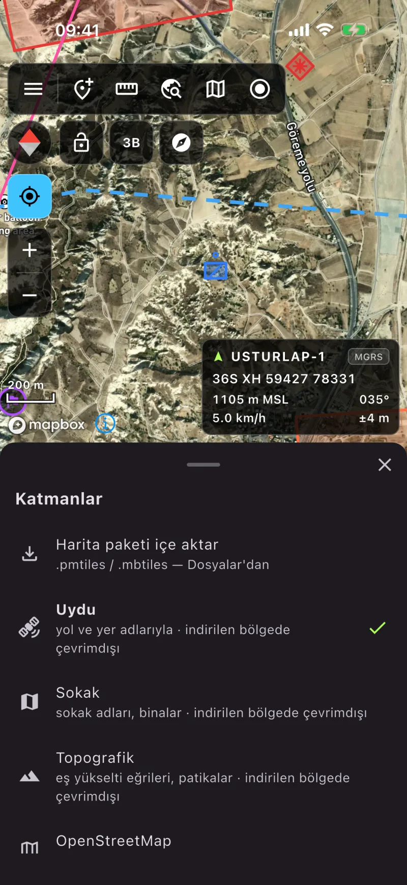
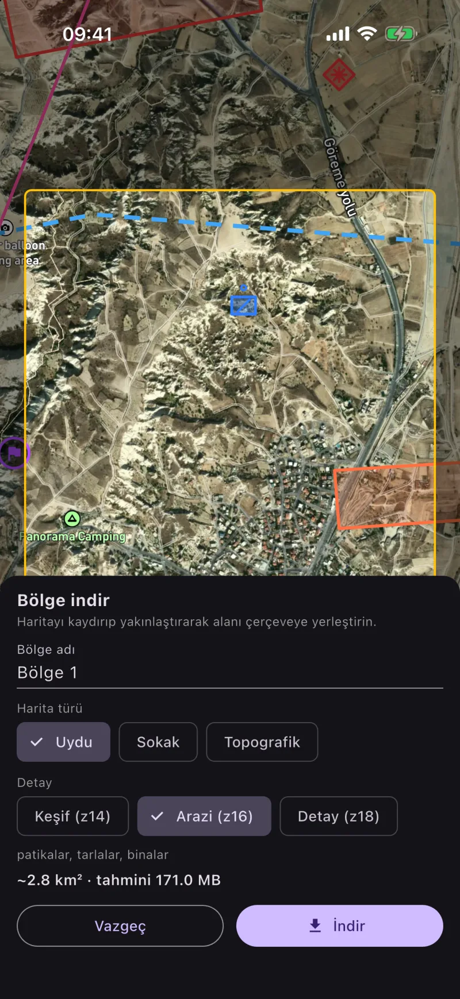
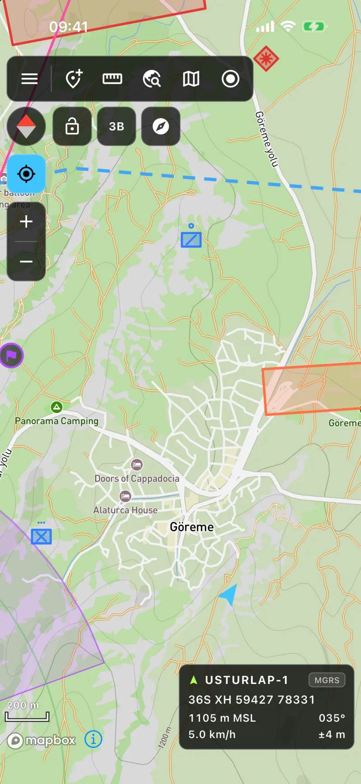
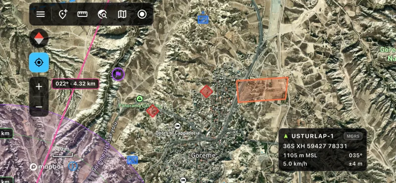

Harita
Şebeke bittiğinde harita bitmez.
Uydu görüntüsü, sokak ve topografik altlıklar. Gitmeden önce bölgeyi indirin, sahada uçak modunda kullanın.
Dağda, vadide ya da kalabalık bir etkinlikte baz istasyonu ilk giden şeydir. Usturlap indirdiğiniz bölgeleri ve kendi MBTiles, PMTiles ya da GeoPackage paketlerinizi çevrimdışı açar. 3B arazi, gece modu ve yatay ekran hazır.
- Uydu, Sokak, Topografik
- Bölge indirme: tür ve ayrıntı seçimi
- Kendi harita paketleriniz
- 3B arazi, gece modu






